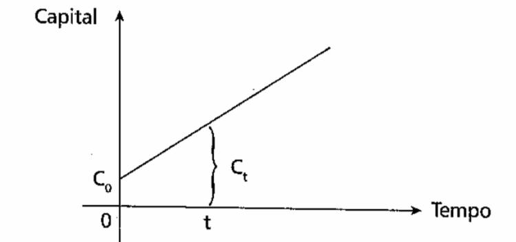
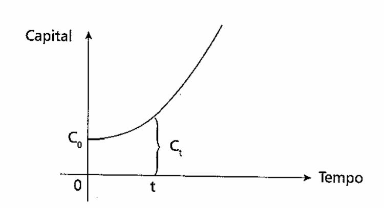
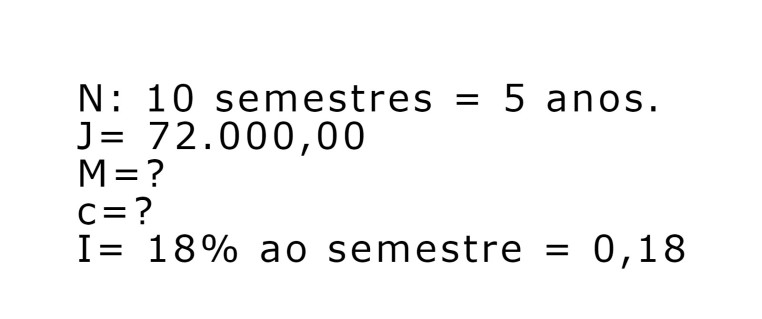
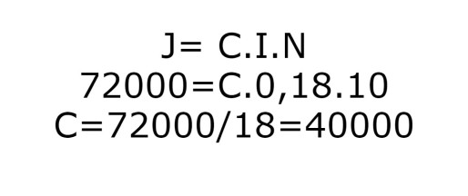
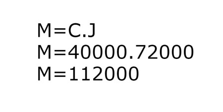

Sabemos que a matemática financeira é um tópico muito importante, pois está presente em diversas situações do
nosso cotidiano. Por meio da porcentagem, do aumento, do desconto, do juros ou dos rendimentos, a matemática
financeira traz ferramentas para lidar com situações-problemas que envolvem dinheiro no nosso dia-a-dia. É
fundamental estudarmos matemática financeira, independentemente da carreira que iremos seguir, para
estabelecermos nossas relações financeiras. O objetivo de educar-se financeiramente vai de encontro com o desejo
de melhor qualidade de vida.
Conceitos Estudados
⸰ Capital Inicial, Principal ou Valor Presente
Valor inicial de um empréstimo/aplicação,
sobre o qual irão incidir os juros.
Símbolos: C, P ou PV.
Prazo
Tempo de duração do empréstimo/investimento. Pode ser medido em dias, meses, trimestres, semestres,
anos, etc.
Símbolo: n
Juro
Preço pago pelo aluguel/empréstimo, do capital. É também o rendimento do dinheiro aplicado.
Símbolo: J
Taxa de Juros
Taxa percentual ou unitária do rendimento do capital ou pagamento pelo uso do capital, numa unidade de
tempo (ao dia, ao mês, ao ano,...)
Símbolo: i
Taxa percentual de juros: 5 %
Taxa unitária de juros: 0,05 (para obter é só dividir o percentual por 100)
Montante ou Valor Futuro
Valor total a ser pago ou recebido com a finalidade de quitar um empréstimo. É o valor final de uma
aplicação.
Símbolo: M, S ou FV (Future Value)
Fórmula: M = P + J
Regime de Capitalização Ato de adicionar juros ao capital.
Capitalização Simples ⇨ Juros Simples
Capitalização Composta ⇨ Juros Compostos
Capitalização Simples
É uma função com crescimento linear
Capitalização Simples ⇨ Juros Simples

Capitalização Composta
É uma função com crescimento exponencial

➟Juro Simples
⸰ Juros simples é um acréscimo calculado sobre o valor inicial (capital) de um aplicação financeira;
⸰ Fórmula:
➟ J = C . i . n
Corresponde a:
C: capital aplicado
i: taxa de juros
n: período que corresponde os juros(TEMPO)
Logo, o montante dessa aplicação será:
M = C + J
M = C + C . i . n
M = C . (1 + i . n)
Sabendo-se que certo capital aplicado durante 10 meses, à taxa de 18% ao semestre rende R$72.000,00 de
juros, determinar o montante
Prmeiro passo: Separar valores

Encontrar o Juro

Encontrar o Montante

Resultados
M=11200
C=40000
➟Juro Composto
⸰ Diferença básica entre juros simples e juros compostos é a base de cálculo da taxa. Nos juros simples, a
taxa é cobrada sobre o valor inicial. Nos juros compostos, a taxa é cobrada sobre o valor do último mês. Ou
seja, nesse último caso, o valor cresce muito mais rápido. É o que se chama de juros sobre juros.
⸰ O conceito do Montante é o mesmo dos Juros Simples: M = J + C; Mas podemos reescrever dessa forma:
➟ M = C(1 + i)^n
⸰ A expressão (1 + i)^n é chamada de fator de capitalização ou fator de acumulação de capital para pagamento
simples ou único.
Voltar
próximo